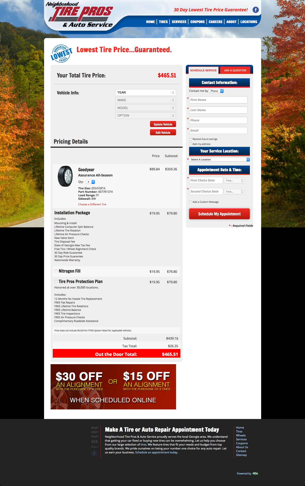
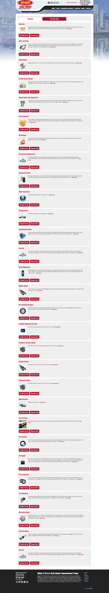
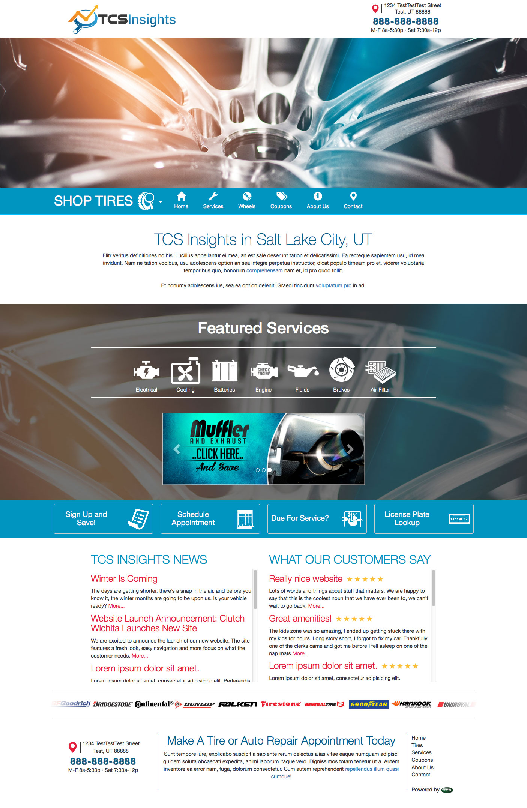
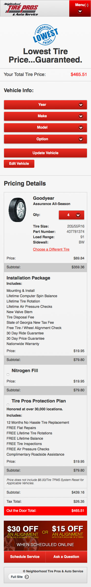
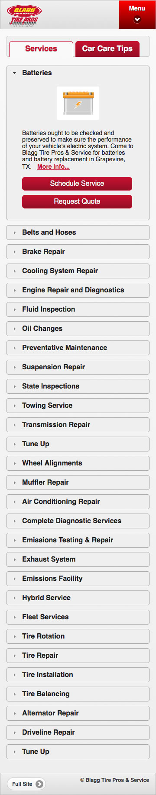
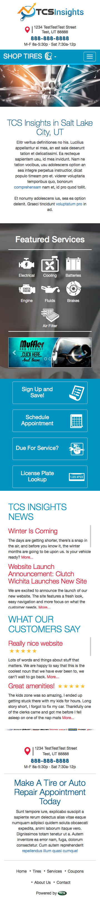

<section id="work" class="work">
	<div class="container">
		<div class="row">
			<div class="col-lg-12 text-center">
				<h1><span>Work Portfolio</span></h1>
			</div>
		</div>
		<div class="row work-row">
			<div class="col-md-8 col-md-push-4">
				<ul class="nav nav-pills">
					<li class="active"><a href="#fullTcs" data-toggle="tab" aria-expanded="false">Full Size</a></li>
					<li class=""><a href="#mobileTcs" data-toggle="tab" aria-expanded="false">Mobile Size</a></li>
				</ul>
				<div class="tab-content" id="tcsTabs">
					<div class="tab-pane fade active in" id="fullTcs">
						<div class="browser-wrapper">
							<div class="browser-top">
								<ul>
									<li></li>
									<li></li>
									<li></li>
								</ul>
								<span class="url"><a href="http://tcstire.com">http://tcstire.com</a></span>
							</div>
							<div class="cycle-slideshow" data-cycle-speed="300" data-cycle-swipe="true" data-cycle-fx="scrollHorz" data-cycle-pause-on-hover="true">
								<div class="cycle-prev">&lsaquo;</div>
						    	<div class="cycle-next">&rsaquo;</div>
								
								
								
							</div>
						</div>
					</div>
					<div class="tab-pane fade" id="mobileTcs">
						<div class="phone-wrapper">
							<div class="phone-top">
								<span></span>
							</div>
							<div class="cycle-slideshow" data-cycle-speed="300" data-cycle-swipe="true" data-cycle-fx="scrollHorz" data-cycle-pause-on-hover="true">
								<div class="cycle-prev">&lsaquo;</div>
						    	<div class="cycle-next">&rsaquo;</div>
								
								
								
							</div>
							<div class="phone-bottom">
								<span></span>
							</div>
						</div>
					</div>
				</div>
			</div>
			<div class="col-md-4 col-md-pull-8">
				<h2>TCS Technologies</h2>
				<h3>Front-End Web Developer, Mobile Project Manager</h3>
				<h3>June 2015 - November 2015</h3>
				<p>I was brought on to <a href="http://tcstire.com">TCS</a> to lead the development of a responsive design solution for a suite of eCommerce Websites. I've created several prototypes and test layouts, and implemented several changes to begin a transition to a Responsive Web Design. </p>
				<h4>Skills:</h4>
				<ul class="skills">

					<li>HTML5</li>
					<li>CSS3</li>
					<li>Responsive Design</li>
					<li>jQuery (UI &amp; Mobile)</li>
					<li>JavaScript</li>
					<li>PHP</li>
					<li>MVC</li>
					<li>Git</li>
					<li>Vagrant</li>
					<li>Adobe Creative Suite</li>
				</ul>
			</div>
		</div>
	</div>
</section>
